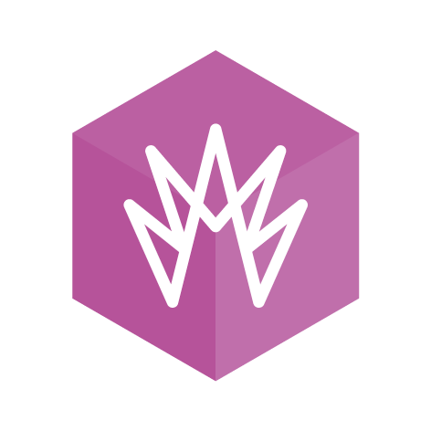
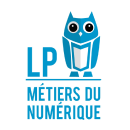

DUT MMI (Métiers du Multimédia et de l'Internet)
2019-2021

C'est une formation qui propose un cursus qui permet d'acquérir des aptitudes en conception web, graphisme,
vidéo, développement d'applications interactives et gestion de projets numériques.
C'est une formation qui propose un cursus qui permet d'acquérir des aptitudes en conception web,
graphisme, vidéo, développement d'applications interactives et gestion de
projets numériques.
Licence Professionnelle COMEN (COmmunication et Médiations Numériques)
2021-2022

Cette licence est une formation spécialisée dans les métiers de la communication digitale. Elle
permet
d'acquérir des compétences clés en communication, marketing digital, création de contenus
multimédias,
gestion de projets numériques, et utilisation des technologies de l'information et de la
communication. Ils
apprennent également à maîtriser les outils et les plateformes numériques indispensables à la diffusion
de
messages efficaces et percutants.
Cette licence est une formation spécialisée dans les métiers de la communication digitale. Elle
permet
d'acquérir des compétences clés en communication, marketing digital, création de
contenus multimédias,
gestion de projets numériques, et utilisation des technologies de l'information et de la
communication. Ils
apprennent également à maîtriser les outils et les plateformes numériques indispensables à la diffusion
de
messages efficaces et percutants.
BUT Informatique
2022-202?
Cette formation vise à doter les étudiants des compétences en développement de logiciels, programmation,
bases de données, réseaux, intelligence artificielle, et bien d'autres domaines
connexes. Ils ont également l'occasion de travailler sur des projets concrets, ce qui leur permet de mettre
en pratique leurs connaissances et de développer leur esprit d'analyse et de résolution de problèmes.
Cette formation vise à doter les étudiants des compétences en développement de logiciels, programmation,
bases de données, réseaux, intelligence artificielle, et bien d'autres domaines
connexes. Ils ont également l'occasion de travailler sur des projets concrets, ce qui leur permet de
mettre
en pratique leurs connaissances et de développer leur esprit d'analyse et de résolution de problèmes.
.png)
.png)
.png)
.png)
.png)
.png)
.png)
.png)
.png)
.png)
.png)